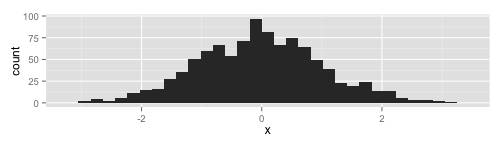

- Edit YAML front matter
- Write using R Markdown
- Use an empty line followed by three dashes to separate slides!
This is a Test Deck
June 19, 2014
Eric Nordmoe
Read-And-Delete
Histogram of Normal Random Variable
Create a plot in ggplot2:
require(ggplot2)
x = rnorm(1000)
qplot(x)
## stat_bin: binwidth defaulted to range/30. Use 'binwidth = x' to adjust this.

Unordered Lists
- Main point 1
- Main point 2
- Sub point 2a
- Sub point 2b
One sample \(t\) confidence interval for mean: \[ \bar X \pm t^* \frac{s}{\sqrt{n}} \]
Include a Local images
Here is my picture on a slide: